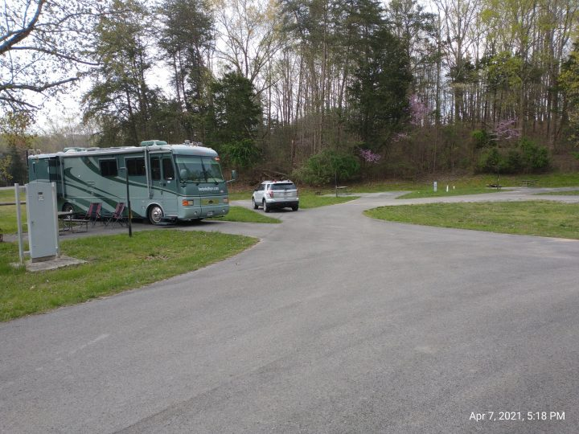
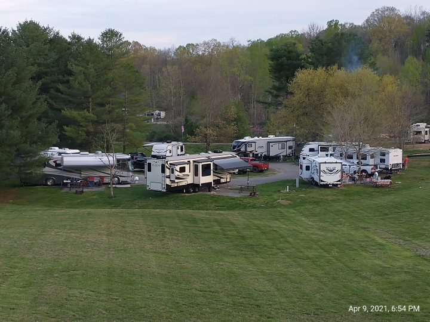
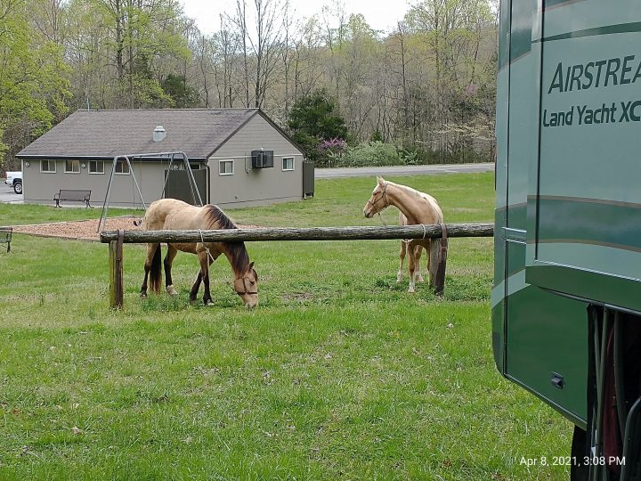

There’s a lot to see and do when visiting the Cheyenne / Laramie Wyoming area, but there’s more than a few hundred miles to go between now and Casa Grande, Arizona which is our target for November 1st. We knew we couldn’t see it all.
We talked with our good friends Matt and Sherry because they just spent a few months in this area volunteering at the Wyoming Historic Territorial Prison in Laramie and I knew they’d have some suggestions of where we might visit.
Although the exercise we’d get walking around downtown would do us all a lot of good, I knew my knees wouldn’t last very long. We spent some time looking online at reviews and found a lot of wonderful reviews for Messenger’s Old West Museum. We decided to check it out.
We found it on the near east side of downtown Cheyenne just north of I-80/US-30 (the Lincoln Highway). What a great find it was!
This is a private collection of Charlie and Katie Messenger that’s just chock full of Old West-era carriages, saddles, models & memorabilia exhibited alongside mounts of bears & wolves. No, they did not hunt/kill any of the wild animals exhibited, they bought them all from other collections. They started their collection over 30 years ago and opened it to the public 20 years ago.
It’s tucked away in a residential / light commercial neighborhood where the Messengers operate their self-storage business. In fact, the entrance to the museum is the same place that storage customers go to pay their rent. The day we were there one of their employees (Marco) welcomed us and allowed us to start our self-guided tour. We were the only ones there and as we each were drawn to different displays, you could hear any one of us exclaim “Oh Wow! – Look at This!”.
What’s really great about this collection is the way all the items are displayed. It’s as if the owner secretly holds a degree in Museum Conservatorship or has received special training as a Museum Curator. It’s wonderful to read about what you’re looking at. Not just what it is, but where it came from, how the Messengers obtain the item, and the significance to their family.
The carriages are especially awesome. These are all REAL horse drawn carriages from the 1800’s old west that have been lovingly restored and/or rebuilt. The Messenger family has driven all of these carriages at one time or another and many of the antique automobiles too for participation in a parade or serving as props in television commercials advertising tourism in Wyoming.
The big burgundy colored carriage in the picture below (Overland Stage Line) is Buffalo Bill’s personal carriage and harness.
None of the items in the collection are replicas, they’re the real thing.
Marco told us that it’s too bad we came in early morning and Charlie (Mr. Messenger) wasn’t there yet. This has been a labor of love for the Messengers for many years and Charlie typically stops in daily to check up on the business and often chats with visitors about some of the displays giving the guests more insight on the history of the early west.
After our visit we (of course) stopped for lunch and afterward we were nearly back to our camp in Pine Bluffs when my cell phone rang. It was Charlie. He was hoping to catch us before we were out of town so that we could visit a while.
It wouldn’t work this time, but we’ll be sure to leave Messengers Old West Museum on our Bucket List for the next time we are anywhere near Cheyenne Wyoming. And you should too!
The museum is open Monday-Friday, 8:00am – 5:00pm, no admission charge, but donations are welcomed.
That’s all for now, but more to come … thanks for riding along. Take Care of yourselves and each other.
After spending two wonderful cool fall days and nights at Historic Fort Robinson State Park we made our way down U.S. 385 to our next stop at Sidney Nebraska.
Free RV & Truck Parking
This location is the World Headquarters for Cabela’s and has two very large multi-story office buildings behind the store, loads of customer parking out front and lots of free truck and RV parking along with free dump station and fresh water fill for the RV’ers. Thank you Cabela’s!
This Cabela’s also has a full hook-up campground (for a fee of course) but if you can get by with out needing hook-ups and you can sleep to the constant hum of diesel truck engines and their refrigerator trailers running all night … well then – free is good!
We arrived mid-afternoon, the four of us grocery shopped across the street at Walmart, ate dinner at a nice little Mexican joint just down the street, and then settled in for the night. We really were not bothered by the trucks and we have ample fresh water/waste water capacity along with plenty of solar and batteries to run the TV in the evening and the furnace in the morning to take off the chill.
We did just fine, but it is fall and the temp got down to 49 degrees last night so all our windows were closed and the hum of the motors was dampened somewhat. If it was summer, the noise might be too loud.
As always, you can click on any of the thumbnails below to see a larger image
My Burrito Platter
Chips & Avocado
The girls both had Shrimp Tacos
David’s Nacho Supreme
In the morning we went on into Cabela’s and did a little shopping (mostly looking). They have SO MUCH STUFF! It’s fun to look at all their offerings from knives, to tents, clothing, shoes/boots, camping supplies, guns, and more. It’s always great to look at their wild game displays too.
After Cabela’s we decided it was time for a late breakfast and Kathy found this great little place that serves breakfast until 10am, then closes until they open for dinner at 5pm. It’s family owned and operated by the same family since the beginning. We enjoyed great atmosphere, super service and outstandingly tasty food!
Well, we finally arrived at Dale Hollow Lake Resort State Park on Wednesday. We checked with Bobbie at the gatehouse and went on in to our new home for the next three months, site Q1.

Our site for the next few months
At first we were a little disappointed because we are in one of the three equine loops here. There are 18 loops, every loop has 8 RV sites, so there’s a total of 144 RV sites with 24 of those being equine sites.

One of the “loops” at the campground
It’s not that we dislike horses .. we enjoy them – not riding them of course, just watching them, talking to them, and given the opportunity, to pet them!

Ivan and Connie pulled into our loop .. they’re from Summer Shade, about an hour west of here toward Glasgow. They have a farm over there but like to come here a few times each summer and ride the trails with their other horse buddies. They’ve been enjoying the park for years.
Their son and daughter-in-law and their kids came in their motorhome so the family is having a good time horseback riding, bicycling, eating together, and telling stories around the campfire in the evening moonlight.
The reason that we were disappointed about being here in Loop Q with the horses is that there’s no wifi here and we sit in a low spot in the park with no cell service and no over-the-air TV reception. Argh!
But … For the Good News … Because it’s an equine area, there’s no playground, no swimming pool, no sand boxes, nothing for kids to do. When most families book sites in a campground, they try to get close to all the amenities and over here all we have is a nice new bath house/laundry within an easy walking distance from the back of our coach. Oh, and very few kids (Yay!)
The first day here we found out the a/c in the car doesn’t work. We asked Bobbie at the gatehouse if she knew a trustworthy mechanic in Burkesville (18 mile’s away) because she told us she lives there. She recommended “Daryl’s Place” up the road a piece.
I took the car up there and he put freon in the system and charged me $16 .. Happy Camper
We drove 18 miles the other way to Albany where I found a Blue Cellular store and bought a new SIM card for my phone (with a new number) so now my phone works here in the park and throughout the region. It’s a pay-as-you-go plan with no contract at $35 a month. So once again .. Happy Camper
Now that I have a phone that works here I could log on to Amazon and order a DISH receiver package. We’ve had DISH before but the outdoor antenna broke and we stopped using it once we were able to get unlimited data with Visible phone service and then we could stream all our TV and other web use with no data cap and no throttling. This is the first place in the country that we’ve found that Visible service doesn’t work. And my new $35/month phone is capped at 4 gig/month so we can’t use that for streaming or uploading pictures.
But in any event, Monday the DISH package should be here and then Kathy will be a Happy Camper!
We made a commitment to start walking regularly once we arrived. So far so good. The campground is a large irregular shaped loop with two rather large and steep hills. (Rough on the knees!)
The loop is just under 3500 steps or about 1.5 miles and we’ve managed (so far) to do that once in the morning and once.again in the evening. Wish us luck!
We’ve not started work yet. The park manager met us Wednesday when we arrive and told us to relax, find our way around, and she’d get with us on Monday, so my next post will be a little about what the job entails.
NOTE: This post was started about a week earlier but I ran out of data on my Mexican (Telcel) phone and so I no longer had a hot spot for wifi to my computer, so I’m finishing up this post while we are back at Rover’s Roost in Casa Grande Arizona where my Visible phone service and hot spot (with no data cap) is working great.
Now, back to the story …
Yes, we’re really enjoying our visit to the Baja with our new Escapee friends. Although we’ve been members of the club about 5 years now, there’s no way you can get to know everybody as there are currently (I think) over 50,000 members nationwide.
And although Chapter 8 has been coming to Mexico for 37 years, the people that travel with them change from year to year. Some have been coming for years while others (like us) have made this their first trip with the chapter and very likely the first trip to Mexico. They don’t always travel to this side of the Baja. Sometimes it’s San Felipe, Rocky Pointe, or even Mexico City.
We’ve been given the opportunity to give back to the communities in which we stay. At our stay at the zoo in Guadalupe Valley we were offered reduced camping fees and free admittance to the zoo (even when they were closed to the public) and in return we helped the keepers in the care and feeding of the animals and their habitats.
We learned that the zoo was founded by Mr. Jiminez and his wife Perla as a service to the forgotten and abandoned animals and the children of the community. They wanted a place that all families could come and enjoy wholesome family time together not only to learn a little about the wildlife kingdom but also to enjoy some recreation together.
The Jiminez family also owned the Jersey Dairy and for many years the dairy supported the zoo financially. Recently the dairy was sold to another corporation and the zoo is now a stand-alone non-profit zoo. It still has Perla (Mrs.) Jiminez as Director and the family is still involved in the management and operation, but the funding is FAR below where it was just a few years ago.
As a result they are struggling to feed and care for the animals. A lot of their “residents” are brought to the zoo by the government that has confiscated these illegally owned animals at ports of entry. Although the government delivers the animals to the zoo to be cared for, they provide NO financial assistance for their care and can come and remove these same animals at any time. That’s a real frustration for the keepers.
We (Chapter 8) members will also help the zoo by ordering items from their Amazon Wish List and some of us brought items down and hand delivered these things to the keepers while we were there. The keepers here are much like our teachers back in the states in that they buy a lot of their own supplies to care for their “flock”. Many of the 13 employees at the zoo are single and are so attached that they think of the animals in their care as their “family”.
In case you are interested in seeing what sorts of things the keepers need – and maybe you’re even moved to help as well, you can check out the Amazon Wish List link here.
When we arrived here at La Jolla Beach Camp, our hosts the Pabloff Family introduced us to the need at a local “Grandparents House” about 10 miles away from our camp. Our Wagon-master and Charity Committee had previously arranged to have us form a work party and provide them with about 200 man hours work to insulate one of their new living units.
When we arrived on site we were introduced to the husband and wife team, Angelica and Nicholas (both pastors) who started this mission along with the help of Justin who’s family is doing mission work both at this home and another one a few miles down the road.
We arrive at the site about 10am and greet some of the residents who were waiting to meet us outside.Justin gives us an overview of the home and the history of the Pastors and their work
It’s really a pretty remarkable story. Mrs. Pastor fourteen years ago found an old woman sitting on her front lawn. The lady looked to be alone and unfortunate so Angelica invited her into her home for lunch. They chatted and got to know each other. At the end of the lunch, Angelica told the lady she was welcome to return for lunch again the next day. The lady thanked her and asked if she could possibly bring a friend …. and so the beginning.
One friend led to another and another and another. Pretty soon Angelica was feeding 20 homeless old people on buckets and tree stumps in her front yard.
In Mexico there is very little money for programs like we have in the states and further these people that Angelica was meeting were mostly forgotten. They have no family that will admit to being related to them, they have little or no education, they have no way to travel, and they have not the knowledge or experience of how to ask for help. They are typically migrant farm workers who historically have lived the nomadic lifestyle traveling from farm to farm working in the fields and living on what little meager existence they can eek out with the wages their farmer pays.
Angelica knew there must be some public assistance available for these poor souls. She took one of them into a government office and introduced her as her grandmother. The agreed that Grandma qualified for a pension of $25 every other month. She then took another and introduced him as Grandfather. Then another and then another. You know what happened next … by the 5th time they knew something was up. She told the government agents the truth. They told Angelica that they were going to make a surprise visit to see for themselves.
When they arrived and saw what she was doing – unfortunately they couldn’t help financially with anything more than the $25 per person every other month. But the COULD provide her with a building close by where she could prepare and serve the meals. Soon after and still today, she and her volunteer helpers are serving meals to about 200 forgotten souls on a daily basis.
But she knew there was still more to be done. These people needed homes. They were living under sheets of cardboard under trees. The more fortunate ones had acquired plastic tarps to live under and were begging on the streets. These are sick and aged people in their 70’s and 80’s who could no longer do manual labor.
That’s where our new friend Miguel Pabloff comes in. Mike helped them obtain the land on which to start a small community of nice clean stick-built homes for these people. All the work and all the materials have been donated. Angelica and her husband Nickolas receive no government funding except the $25 previously mentioned.
We will be insulating the orange building. The purple and green buildings are completed and occupied with 5 residents in each building – each with their own room
Currently there are 15 residents and the Pastors do all the cooking, cleaning, bathing, activities and more. The do get volunteer help as well. The day we were there two student nurses came to check on all the residents and will be coming weekly for the next six months while they are still in school. Other volunteers come (unsolicited) from churches and neighborhoods in the area to help because they’ve heard of the unselfish work that Nicholas and Angelica are doing and want to help.
One of the 5 resident rooms in each of the finished buildings. Each resident has a bed, a chair, a toilet, sink, a small table, and a clothes closet
Although the resident rooms are very plain, we were told that to these folks, it’s a castle. Most of them had been living on the streets.
The rooms are spartan and very clean. There is one very large shower (to accommodate a wheelchair) in each building. When the residents want community or meals, they need to get over to the community dining room. Some are ambulatory with the help of canes or walkers while others need to be pushed along in wheelchairs.
The dining hall / community room where we ate beef quesadillas for lunchThe new kitchen under construction – currently Angelica prepares ALL the meals for the 15 residents and her own family on-site in her home
Remember, clicking on any of the thumbnail photo will open a larger picture so you can see more detail.
Interior of the finished green residence building
Some of the insulation staged
Inside the orange building before any insulation is installed
The insulation crew hard at work
The overhangs being painted
Gary’s working on window frames
Alan and Herb painting trim
Miguel brings us all hot beef enchiladas for lunch
Yummy!
Our own Malcolm Russ entertained the residents with his violin and beautiful singing voice
The pictures in the gallery below show tables filled with donation items (food and clothing) for the Grandparents home and also to distribute to some of the less fortunate out in the country.
We collected (from ourselves) the donations and then on Saturday night we had an auction where we got lubed up with $2 Margaritas beforehand and then bid on items given by ourselves to our “other” selves. We raised about $4000 in the auction. This is just part of the monies that Chapter 8 will be giving back to four different Service Projects (charities) here in Baja California before we leave.
Our “Vanna’s” for the auction
Thanks for riding along … More to come in our next post.
This might be getting a bit repetitive, but it’s not getting old for us! This is so wonderful being able to get such a close-up interaction with the zoo animals and their caregivers.
Today we spent time with the Yellow Parrots, Pumas, Spider Monkeys, and Macaws. We helped to feed them and helped to clean their habitat — things that the keepers do every day. We also gave them enrichment toys – things that help to keep them curious and stimulated – not just bored & locked in a cage.
Time feeding and playing with the yellow parrots
Keeper Arturo teaches us about the Macaw and caring for the Pumas
See the cart that Arturo (picture above) is pulling along the trail as we walk from exhibit to exhibit? They use carts (usually pulled by bicycles) to move tools and supplies around the zoo as they need them. In the states we would have the luxury of being supplied with motorized carts/trucks of some sort.
One of the groundskeepers emptying the trash receptacles in the morning
Arturo got one of the staff here at the zoo to take our wheel off and get the flat tire fixed and reinstalled. Service on-the-spot and only $300 pesos ($15 US) – Hooray!
Our flat tire got fixed by one of the staff
Later in the day we got to share some time with a new (3 month old) lion cub “Carlotta”. She’s very playful so she had to be watched very closely by both Stephanie and Antonio (keepers) because the wooden fence isn’t that tall and she can jump easily and quickly.
Keeper Carlos talked to us about the 4 different types of reptiles and introduced us to a few of the residents of the habitat he manages. Some were so uncomfortable they left the room or refused to come in to begin with, but most of us stayed and enjoyed Carlos’ informative presentation.
Late afternoon we all carpooled to L.A. Cetto Winery. We got a great tour of the operation led by our tour guide Adrian. He shared with us that this winery was started in 1928 here in Guadalupe Valley and it is the largest winery in all of Mexico. They manage and harvest about 3000 acres, having about 250 seasonal employees in the fields. The grapes are all hand picked and they produce over 1 million cases of wine annually. The (2) rooms of stainless steel fermenting tanks hold over 3 million liters of wine at a time. After fermentation the wine is transferred to the oak barrels where it stays for just a few and up to 65 years!
After the tour we all went up to the outdoor patio for the wine tasting and Tapas made by our own crew. Our caravan leader Ed Dennis graduated in culinary art from a Paris school years ago so he asked for volunteers from our group that could help him prepare our afternoon feast – It was fabulous!
There’s more to come …. we’re all heading out to a local Mexican restaurant tonight and tomorrow morning we will all say goodbye to our new friends at Zoologico Parque del Nino Guadalupe Valley and head further south on the Baja Penninsula to La Jolla Beach Campground.
Day three (Saturday February 15th) started out another beautiful sunny wonderful day in paradise. After breakfast in the coach – Kathy with her oatmeal and me with my scrambled eggs with mushrooms, onion, and a little potato mixed in – we headed on over with the others to the pavilion in the center of the zoo. Here we met with zoo biologists and keepers where we divided into four groups of 12 and then headed out for our “up close and personal” tours of the Zoologico Parque del Nino Guadalupe.
Our tour group leaders (biologists, keepers, veterinarian, director)
This zoo was started dozens of years ago by the owner of the Jersey Dairy Company. He and his family created, managed, and funded the zoo. In recent times, this man passed away and as a result just this year the zoo no longer gets any funding from him or his family. The zoo is now a not-for-profit organization and relies on admission prices and donations to stay afloat. It became very clear to us during our tours that the employees of the zoo (11 employees total) are working here because of their love for the animals. This .. in many ways is their family.
The Escapees RV Club Chapter 8 “Mexican Connection” came here last year and again this year to not only be entertained but also to help out both physically and financially through our admission fees and our auction that will be held here later this week.
Antonio – Our tour guide for the day – 32 year old Zoo Biologist
Remember, you can click on any of the thumbnails below to see a larger image.
Antonio led us on a very informative tour and it became clear very quickly that he and his co-workers care very much for the animals. Nearly all of the animals here arrived from the government. Many have been confiscated at ports of entry or have owned by individuals as family pets and then have been abandoned or given up when they became too big and no longer manageable (or affordable) to keep as pets.
The government has no means to care for them so they come here to Zoologico Parque del Nino Guadalupe. Although the government gives them to the zoo to take care of for an undetermined time (during investigation and litigation) they do not give the zoo any funds to care for the animals. In some cases, the zoo may take care of these animals for years but the government can always come back and take them away.
Other animals are given to the zoo as gifts – which was the case with the 40+ peacocks that they have. These were a gift from a priest.
One of three swimming pools
The “Zoo” is much more than a place to see animals. The Guadalupe Valley is generally an area of very poor families. When the zoo was started, the owners wanted it to be a place where local families could come and learn, play, eat, and enjoy family time together.
In fact, up until very recently all it cost for admission for a whole family was a Jersey Dairy Milk bottle cap. The children could provide a day of fun for the whole family just by saving their bottle cap from their milk at school and presenting it at the front gate to the zoo.
There are three swimming pools, a pond with paddle boats and lots of shaded picnic tables. Families are encouraged to bring their picnic baskets and enjoy the day together.
After our tour of the zoo we had the rest of the day to ourselves. Some went into town right away while others took care of chores at home. We evidently picked up a nail or screw as we got close to the zoo on Friday because by the time we pulled in to our parking spot our “toad” had a flat tire.
Bummer
But not to worry – I’m sure there’s a tire shop in town somewhere and we don’t need to drive anywhere anytime soon – there are others here that we can carpool with to any of the local attractions.
Although Guadalupe Valley is very poor, it is rich with vineyards and wineries. But these vineyards and wineries are not owned by local people nor do they employ local people. You’d think that the local economy would be lifted by these wineries, but they are owned and operated by companies from Tijuana or Mexico City and they bring in their employees from out of the area. Go figure.
We finished off the day with a visit to Baron Balche’ Winery where we had a tour, a wine tasting, and dinner. What a wonderful cap to a fantastic day!
Sorry for the dark pictures – it was dark and damp down in the cellars
Be sure to click on the thumbnail pictures above so you can see more of the detail. You can see in one of the pictures the rough rock walls encompassing the cellars.
Each of the large stainless steel tanks hold 7500 liters of wine – there were about 40 of these huge tanks. There were HUNDREDS of White Oak barrels. The barrels come from French Oak or American White Oak and there are two sizes of barrels – either 300 or 600 liters.
There is NO heat or A/C in the cellars – they are literally dug out of a whole in the ground. It’s a constant 55 degrees and very humid – water drips down the walls so they have fans blowing to keep the air moving so mildew doesn’t form.
It’s been another busy educational, fun, and rewarding day. Now off to bed because “Tomorrow’s Another Day”
Thanks for riding along – we hope you can make it with us to Day 4!
We (Group 1) left Potrero Park at 7:30 a.m. Our group is the Parking Group so we need to head out before any of the other groups so we can be in place at the next location far enough ahead so we can be set up and ready to Park all the other rigs coming in behind us. There are 3 other groups consisting of 5 or 6 rigs each.
Since we all have our FMM cards already, we COULD have been swept right through the border crossing. But Kathy and I weren’t so lucky.
The official stopped us, checked our registrations, looked in a couple cabinets, and then greeted us with “Happy Valentine’s Day”
We moved on through the gates and all 6 rigs in Group One stayed in touch on our CB radios as we traveled the next 50 or so miles down to Zoologico Parque del Nino in Guadalupe Baja California Mexico.
Once we arrived, our fearless Group One (parking group) leaders Jim and Connie gave us our instructions along with our bright orange safety vests and flags. We we’re now official parking team members!
Our official uniforms
We then spent the next couple hours greeting and parking rigs as each subsequent group rolled in.
We we’re the first rig in so we got the prime spot in the corner closest to the wolves and the lion!
Right up front closest to the action
After we got all the rigs parked, we all wandered over to Ed & Kassandra’s (Our Trip Leaders) rig to pick up our new Baja jackets and get an update on the schedule for the coming days. Ed talked a little about the history of the Baja Jacket and his design for the logo embroidered onto the front.
Ed talks about the history of the Baja Jacket
Handing out our new hooded jackets
The White Board with upcoming activities
Passing out our new 2020 Baja Jackets
Right after the afternoon meeting we moved on into the zoo where we were gifted with a beautiful Valentines Dinner prepared by the park owners daughter who is also a recently graduated chef! The meal was a delicious dish of Mexican Lasagna with green salad and refried beans served with fresh sangria or a unique cucumber/lemon drink and topped off with Red Velvet cupcakes.
And another special treat of the night was a gift from Malcolm Russ – one of our own who, as it turns out is a retired professional musician and vocalist who has played in national orchestras as well as smaller venues all over the country. He took requests, while also giving us some great love songs to bring the evening to a close.
Day three brings us a personal guided tour of the zoo with a close-up look at the animals with led by one of the two zoo biologists.
We took a walk this morning from the campground over to the city park and back around through the hatchery.
Had fun feeding the fish like so many thousands of others have done this summer.
Couldn’t help but catch a short video of this little fairy enjoying life and her time with Mommy & Daddy at the hatchery.
It’s been really great to volunteer here this year and meet all the folks from all over the country (and some other countries too!). They all marvel at what a beautiful facility it is here and the fact that it’s a FREE attraction makes it that much better!
Some families .. local and otherwise come back time and time again .. especially if they’re lucky enough to have little ones. Both the kids and the adults get such a kick out of feeding the fish and the ducks.
Next time you find yourself in the Dakotas, make your way to the northern Black Hills and be sure to visit the cities of Deadwood and Lead. Then head north on Route 14a through beautiful Spearfish Canyon stopping along the way at Cheyenne Crossing, Roughlock Falls, Bridal Veil Falls, Devils Bathtub, and then end your day trip at the wonderful little town of Spearfish. Here you can enjoy a picnic lunch at Spearfish City Park and then walk over the footbridge to visit DC Booth Historic National Fish Hatchery. Although we will be off to some other destination yet unknown, we’ll be here with you in spirit. Have fun!
Our traveling friends Mike and Dawn regularly post You Tube videos and Dawn writes some of the most beautiful and thought provoking blog posts. I wanted to share with you one of her “Sunday Snapshots” posts that made me think back to my earlier days with my Dad.
If you’re not already subscribed to this blog, you can easily do so by scrolling up to the top of any page and entering your email address in the block on the right side.
You can also subscribe to our YouTube channel (herbnkathyrv) on You Tube.
If you’re curious (at any time) to know where we are at that moment then click the button at the top right of this page labeled “See Where We Are Now“.
We’d love to hear from you. If you scroll all the way down to the bottom of this page, you can send us a note. Again, thanks for riding along. ’til next time – safe travels.
After our three days and nights at the Sweetwater Events Center (fair grounds @ Rock Springs Wyoming) we made our way further east on I-80 and then up U.S. 287 through Muddy Gap and around Casper, then up I-25 to Powder River Campgrounds at Kaycee, Wyoming.
Honestly, the only reason we went to Kaycee was because the camping was cheap, it would be a full hook-up site, and they had a laundry. We are members of Passport America and the PA web site showed Kaycee as the closest member park and as a result we are able to stay for $20/night which is 1/2 the normal non-member rate of $40 nightly.
There was one other camper there, but we never saw any occupants
We were cheerily welcomed by the on-site park manager Deneene and she welcomed us to the area, gave us a full hook-up pull-through site and proceeded to tell us a little about the town and especially the Bronc Riding School that would be happening the next two days across the street at the local fair grounds.
Turns out that Kaycee is famous for producing professional rodeo stars – over a dozen have come from this sleepy little town to go on to earn their living as professional national rodeo stars.
Here’s an excerpt from a local paper explaining the phenomenon;
The following is an excerpt from PATRICK SCHMIEDT Star-Tribune staff writer Jul 13, 2006
Blend a supportive community, a heavy dose of history and a simple case of boredom, and it shouldn’t have been too surprising to see five Kaycee competitors in Wednesday’s performance at the Central Wyoming Rodeo.
The small town of about 250 people an hour north of Casper has produced more successful cowboys than most towns 100 times its size. But none of the five competitors in Wednesday’s performance has completely figured out why.
Morgan Forbes, a 23-year-old saddle bronc rider looking for a return trip to the National Finals Rodeo, attributes the success of Kaycee cowboys, in part, to boredom.
“There’s not much else to do out in Kaycee,” he said.
As for Jeremy Ivie, who, at 29, moved to Kaycee five years ago from Duchesne, Utah, it’s all the “old guys” in town who help foster rodeo success. After all, the names of rodeo families in and around the town are familiar in rodeo circles: Forbes. Graves. LeDoux. Sandvick. Scolari. Shepperson. Orchard. Jarrard. Latham.
Dusty Orchard, a 25-year-old bull rider, said the town is a “coffee shop,” where the residents applaud when a hometown cowboy does well and offer a twinkle-eyed razzing when there is more disappointment than success.
Or, as Orchard suggested, it may be because Kaycee doesn’t have a football team to rally behind. Instead, the community rallies around rodeo.
Actually, it’s a combination of those ingredients that blend the perfect atmosphere for the sport, an atmosphere that has helped to produce about a dozen competitors – around five percent of the town’s residents – solid enough to maintain current careers on the professional rodeo circuit.
“If you want to rodeo, it’s the greatest place in the world to grow up,” said saddle bronc rider Sandy Forbes, Morgan’s older brother. ” … It’s just what we do.”
“If you’re wanting to be somewhere that supports rodeo, that’s the town,” she said.
We decided to stay another night and that afternoon after the Bronc School an Airstream trailer pulled in next to us and we met Angie and Bunny who were traveling to Yellowstone (to work) from Indiana. We enjoyed a nice chicken dinner with them that night at a local restaurant.
Kathy in the laundry
The “Invasion” bar and cafe
Our breakfast menu next morning
My bacon ‘n cheese omelette
Statue of Chris LeDoux
Statue memorializing Chris LeDoux
The Village Park honoring local hero Chris LeDoux
Our new friends Angie & Bunny (and dog)
It was a real treat for these two city-slickers lemme tell ‘ya. We got to see a “stampede” of a hundred horses go by us on the bridge that we could’ve reached out and touched. Add to that watching these young kids get bucked off the broncs as their seniors trained them to ride ’em.
Check out the video below for the full story.
Thanks for riding along. We appreciate that you stop to take the time to read and come along with us on our adventure. Please leave a comment or two down the page in the comments section – What do you think of these kids being bucked off the horse?
Not sure if there’s an official definition of Driveway Surfing, but my definition is; When an RV’er spends the night on someone’s (often a fellow RV’er) property rather than in a commercial campground or RV park.
Our spot near Ocala, FL in the coolness of the towering pines
This is not only a less expensive alternative to commercial facilities, but much safer than the often-used boon-docking (dry camping) at Wal-Marts, Cracker Barrels, Truck Stops, highway Rest Areas and the like.
The term “Boon-docking” by the way, also known as “dry camping” in the RV’er’s world is stopping/staying at a location that does not offer any utilities or other amenities. Most RV’er’s are traveling in self-contained units meaning they carry their own water (and waste) tanks and have a means to provide limited electricity to the unit for lighting, water pumping, and sometimes more.
We’ve found that the big added benefit of these overnight stays are the wonderful welcomes we get from our gracious hosts. We often spend the afternoon and into the evenings together sitting around the bonfire trading stories of our RV’ing and life experiences. Sometimes we even have dinner together.
Although Kathy and I first became aware of this wonderful benefit of full-time RV life through our membership in Boondockers Welcome, we soon found out that there are other opportunities out there as well. We’ve found that the Airstreamers (Wally Byam Caravan Club International) along with FMCA (Family Motor Coach Association), and Escapees RV Club members have programs similar to the Boondockers Welcome program. Another program mentioned to us by many other RV’ers is Harvest Hosts. Although some of these programs require a nominal annual membership fee in order to access the database and reservation software, others are free to club members.
Here are some pictures we’ve taken as we’ve traveled and met other RV’ers using our “Driveway Surfing” privileges utilizing BoondockersWelcome.com.
Roger and Jan – Randall, Kansas
We were warmly welcomed by our first BoondockersWelcome hosts Roger and Jan to their farm near Randall, Kansas in spring of 2016. Roger and Jan have a beautiful “earth” home that they custom built on the family farm that Roger was born on. While Jan prepared dinner for us (a very welcome surprise!), Roger took us on a tour of the 1000+ acre farm that their son now manages and farms (along with Dad’s occasional help). Roger and Jan have traveled all fifty states, 6 of the 10 Canadian provinces, and down into Mexico.
Click on any of the pictures to see an enlarged view
Herb, Jan, Roger, & Kathy
Our parking spot in front of their home
The original farm house that Roger was born and grew up in
Coyote & Angel – Ocala, Florida
Our next fantastic visit was to Coyote and Angel’s log cabin retreat near Ocala, Florida. And what a treat it was! They’re both retired now, but both have a colorful past and have enjoyed rebuilding over 30 classic and antique cars and trucks in their retirement. They’re also very creative and have built a wonder-filled outdoor experience that the pictures below can only begin to explain. Utilizing BoondockersWelcome, they invite RV’er’s to come and spend the night and they offer their retreat to host car shows, weddings, and other private events. Since our visit Coyote and Angel have sold their motorhome and bought a vintage Airstream travel trailer and are planning on taking a trip up to Michigan this summer and we’re looking forward to seeing them again up there while we are at our Workamping job at Baldwin, MI.
Click on any of the individual pictures to see an enlarged view
The Relaxation Pool
Outside the Barber Shop
Outside Fireplace
The “strip” downtown
Tiki Bar on the (fake) lake
Kathy enjoying her stay
All the necessary amenities
Our spot nestled in the pines
Another view
Another view of the downtown business district
Cadillac & ???
Our hostess Myrtle
Our gracious hosts Coyote & Angel
Perry, Ginny, and Georgia – New Boston, TX
Now Perry and Ginny (along with Memaw Georgia) eagerly welcomed us to their home near New Boston, Texas and they showed off their southern hospitality by treating us to a great BBQ rib dinner.
We also enjoyed meeting another Boondocker couple there (Brad & Elaine) who had just returned from a month long trip to New Zealand to visit their daughter. We all had a great evening together talking and laughing.
Be sure to check out the video below of Ginny and Perry’s “Alpine Village” that they’ve put together over the years. Ginny told us that after we leave they were going to take it all apart to dust and clean and then put it ALL BACK TOGETHER AGAIN! Glad it’s not MY job!
Click on any of the individual pictures to see an enlarged view
Germantown, OH – Lynn & Jackie
On our way back to “the old home place” in Ohio this spring, we took advantage of the invite by Lynn and Jackie at Germantown, Ohio (near Dayton). They had us in for a wonderful home-cooked spaghetti dinner and the next day (we stayed two nights) Kathy and I toured the U.S. Air Force Museum adjacent to the Wright-Patterson Air Force Base. We also toured the Wright Brothers Museum and the original Bicycle Shop, then spent the late afternoon at Carillon Historical Park where they have nearly 35 buildings there originally built anywhere from the 1870’s to the 1930’s. The second evening we went out to a local Mexican restaurant and then Jackie and Lynn treated us to a wonderful farewell waffle breakfast just before our departure!
Click on any of the individual pictures to see an enlarged view
Jason – Fairhope, Alabama
This stop was different in that we were not in the driveway of someone’s home, but rather their business. Jason, a former school teacher turned restaurant owner is a RV’er wanna-be. Having some restaurant experience in his past life, Jason opened this restaurant about 11 years ago and now is ready to sell and hit the road.
He’s joined all the RV clubs out there, is constantly reading RV’ers blogs and watching YouTube videos about the RV lifestyle and invites RV’ers to his restaurant so that he can have the opportunity to meet and learn from others.
RV’er friends of ours (that we had met in Arizona in 2016) were staying at an Escapees RV park just a few miles away, and so they came on over and we had a great night together enjoying shrimp PoBoys and fried clams.
In the morning, I went on over to the kitchen early while Jason was prepping for the lunch crowd. I followed him around enjoying the fresh hot coffee and talking about our life histories and RV’ing.
Click on any of the individual pictures to see an enlarged view
Our Boondocking site at the parking lot
The boat ramp down to the marina on the river
Yes, this is a lifeboat!
Herb & Kathy on the patio
Herb, Jason, and Kathy
Outside the restaurant
Another outside view
As we’ve said before, “although seeing the sites as we travel around the country is great … the really wonderful experiences are the new friends we make along the way”, and we thank Boondockers Welcome for helping us to that end.
Driveway surfing is just one more way to experience the good life … maybe you’ll try it someday yourself!


{kind=link}
{kind=link}
{kind=link}
{kind=link}
{kind=link}
{kind=link}
{kind=link}
{kind=link}
{kind=link}
{kind=link}
{kind=link}
{kind=link}
{kind=link}
{kind=link}
{kind=link}
{kind=link}
{kind=link}
{kind=link}
{kind=link}
{kind=link}